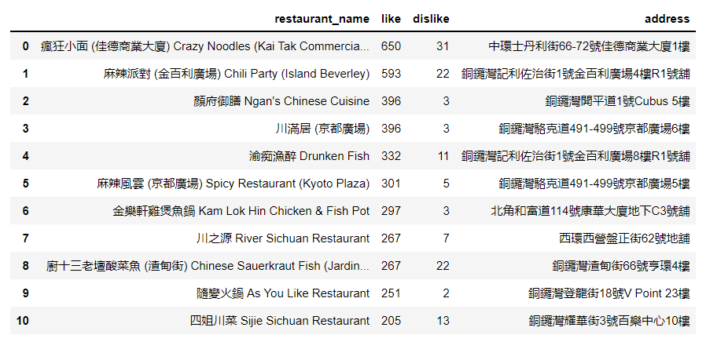
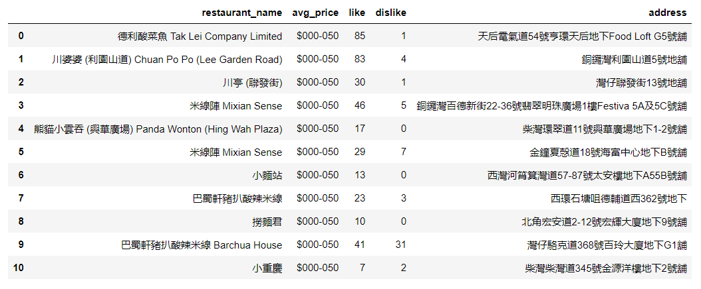
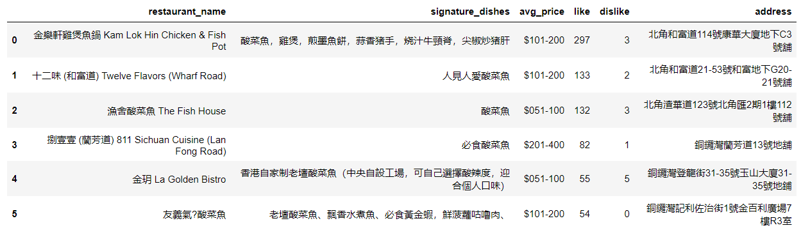
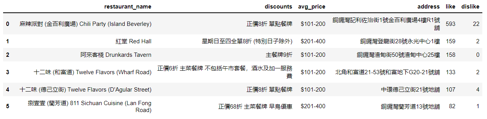

SICHUAN CUISINE in HK ISLAND
In this assignment, ParseHub was used to help get the data from openrice website. According to my food preference, I chose to scrape the information about Suichuan cuisine restaurant from Hong Kong Island, including restaurant name, address, price range, number of likes, number of dislikes, discounts, and signature dishes, about 13 pages and 204 rows.
Moreover, Open Refined was used to clean the data. Firstly, I removed the restaurants which were displayed “being decorated”, “moved away” or “delivery only”. Second, I removed restaurants with neither “number of likes” nor “number of dislikes”. Finally, I changed the prince range “under 50” to “000-050”, and “51-100” to “051-100” for ordering by price ascending in SQL.
Once the data was imported into the table, I designed 4 SQL command to sort the data based on my habits to choose restaurant. The first is to select 10 restaurants with best reputation (according to the number of likes).
And then I selected 10 cheapest restaurants used “order by avg_price ASC”.
Thirdly, I used “WHERE discounts NOTNULL” and “order by like DESC” to select 5 restaurants having discounts activities with good reputation.
At the end, I selected 5 restaurants whose signature dishes are “酸菜鱼”, ordered by number of likes descending. Furthermore, I used Python codes combined with SQL queries to present the result in a Pandas data frame.
